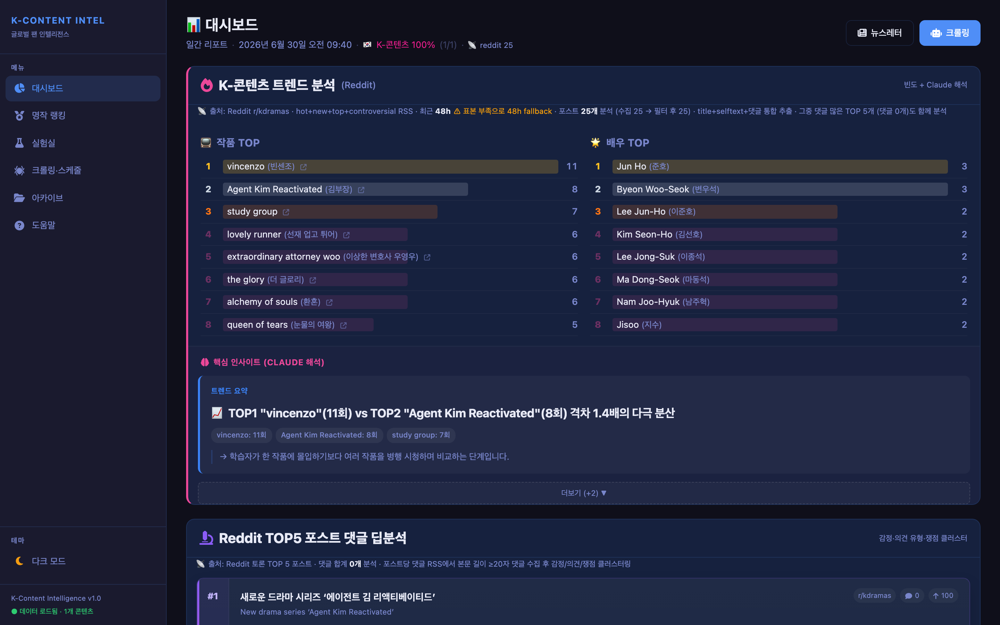
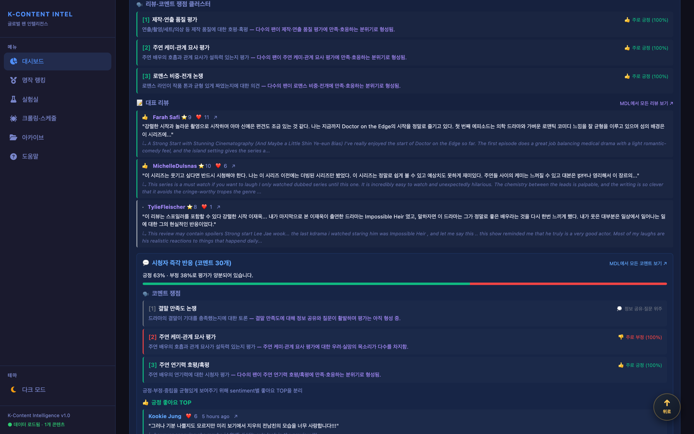
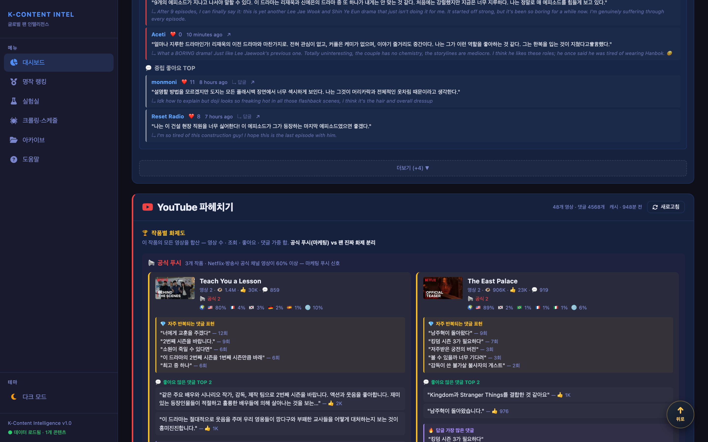
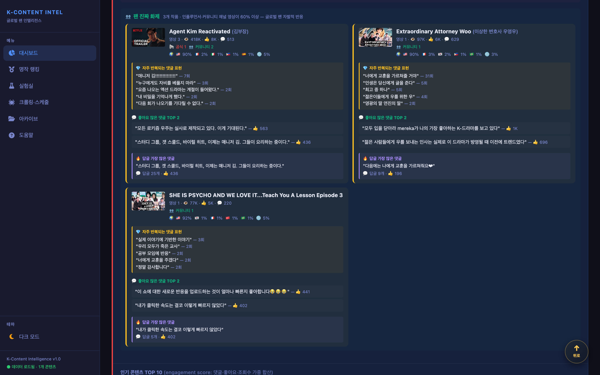
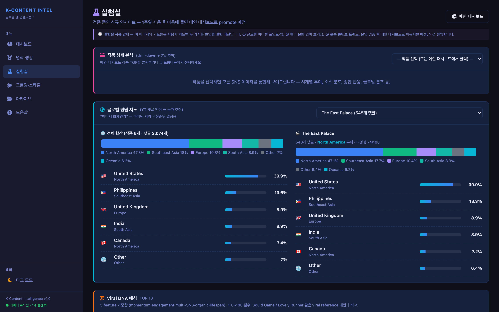
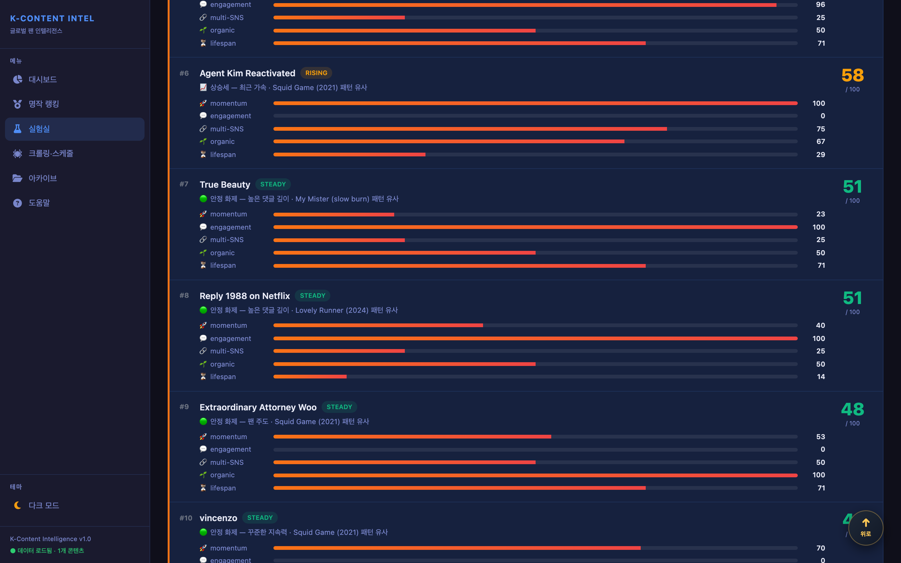
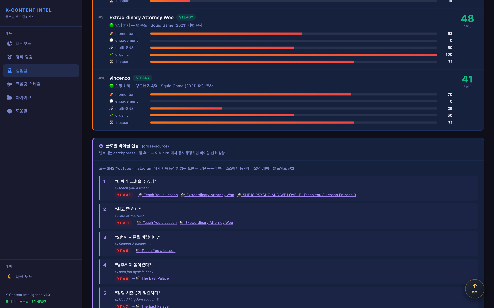
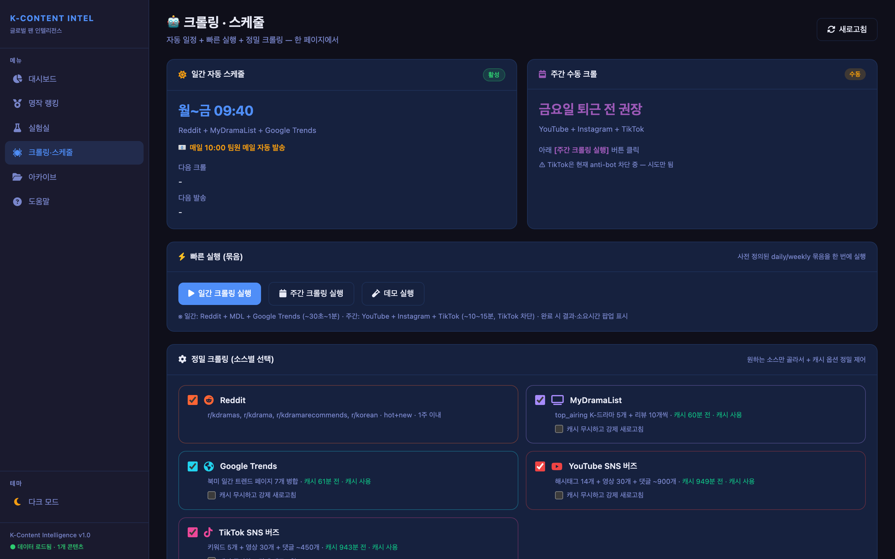
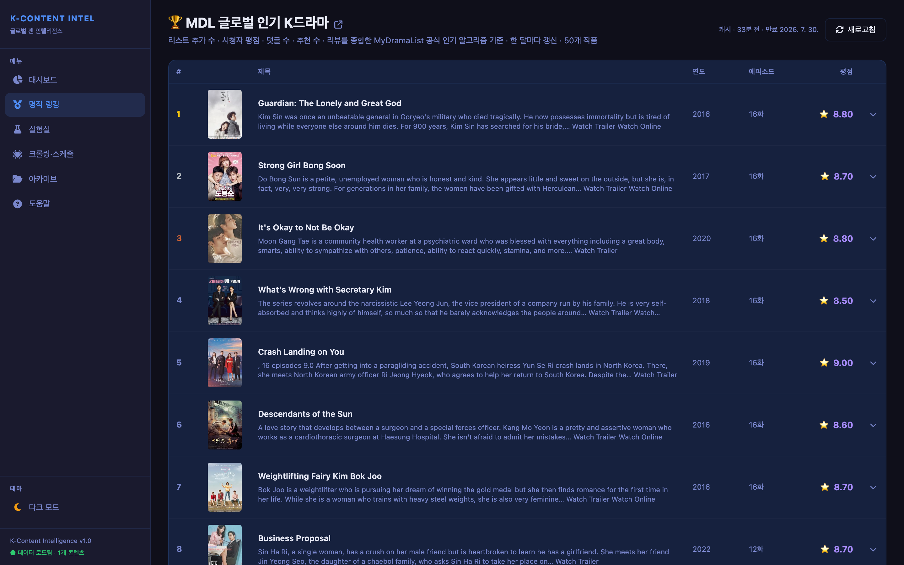
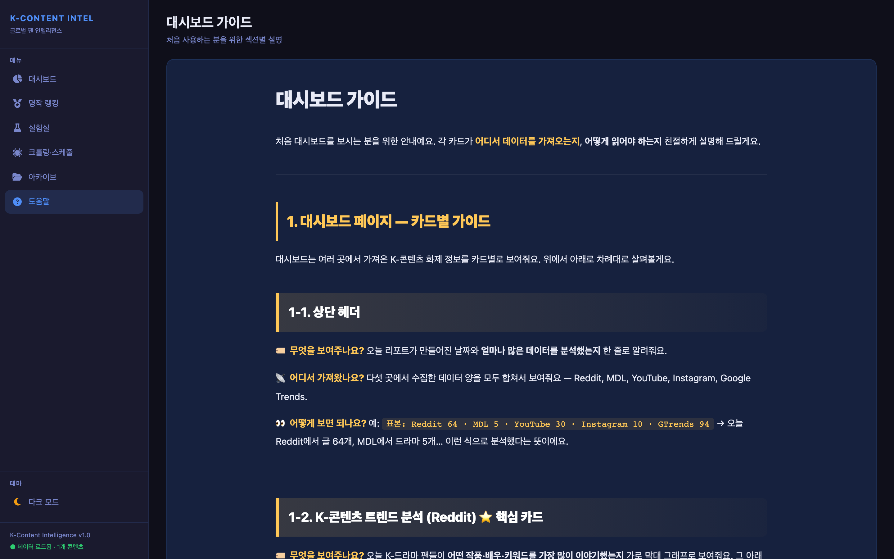

01 / Overview
K-콘텐츠가 세계적으로 화제이지만, 한국 마케팅·기획팀은 외국 팬 반응을 영어·스페인어·포르투갈어로 직접 읽어야 했습니다. Netflix Top 10이나 Parrot Analytics 같은 외부 툴은 시청률 총량만 알려줄 뿐 "어디서 왜 화제인지"는 보여주지 않습니다.
그래서 6개 SNS에서 매일 자동으로 데이터를 수집하고, Groq llama-3.3-70b로 한국어 번역해서 한 화면에 보여주는 도구를 단독으로 만들었습니다. 매일 09:40 KST에 cron이 크롤 → SQLite 영구 캐시 저장 → 10:00 KST에 Resend로 한국어 뉴스레터 자동 발송. PM2와 macOS launchd 위에서 7일 무중단으로 돌고 있습니다.
02 / Tech Stack
- Runtime
- TypeScriptNode.js 25tsx (no build)
- Backend
- ExpressSQLite (better-sqlite3)node-cron
- Crawling
- Playwright + stealthyoutubei.js (Innertube)RSS Atom
- AI / 번역
- Groq Chat APIllama-3.3-70bfranc (lang detect)
- Frontend
- Vanilla JS SPAChart.js v4CSS Custom Properties
- Resend
- 운영
- PM2macOS launchd
03 / Features
다중 소스 통합 K-콘텐츠 트렌드 (Reddit 기반)
F-016개 SNS의 작품 언급을 정규화 매칭해 통합 차트로 표시. TOP 1 작품 언급이 단일 소스 2회 → 통합 26회 (13배 정확도 개선).

MyDramaList Top Airing 분석
F-02MDL Playwright 크롤 + Cloudflare 우회. 방영 중인 K-드라마의 평점·리뷰·시청자 반응을 Groq 번역으로 한국어 인사이트화.

YouTube 작품별 화제도 + 언어 분포
F-03youtubei.js Innertube 무인증 API로 18개 해시태그 → 80 영상 × 300 댓글. 채널 분류(공식 푸시/팬 화제/혼합) + 댓글 언어 분포 시각화.

Instagram Reels (헤드풀 트랙)
F-0432개 해시태그(다국어 10 + 작품 동적 8 포함) × 12 Reel/태그. 안티봇 회피 5종(마우스 자연 이동·가변 스크롤·자연 진입·캡션 읽기·delay 1.5×) 직접 구현.

🧪 실험실 — 작품 상세 drill-down
F-05메인 대시보드에서 작품 클릭 → 실험실 자동 진입 + 작품 자동 선택. 7일 화제도 추이 차트 + 6 SNS 통합 데이터.

🗺 Atlas — 글로벌 팬덤 지도 (차별화)
F-06YouTube 댓글 언어 → 17개 언어 × 30+ 국가 weighted 매핑. 인구 비례 + K-content 활성도로 가중치 결정. Shannon entropy로 다양성 지표 0~100점 도입. 외부 툴엔 없는 "어디서 화제인가" 시각화.

🧬 Viral DNA — Rule-based 신작 viral 점수 (차별화)
F-07학습 데이터 부재 → ML 대신 도메인 지식 기반. 5 feature 가중합(momentum 30% · engagement 25% · multi-SNS 20% · organic 15% · lifespan 10%) + 4개 reference 작품과 cosine similarity로 viral 패턴 매칭.

크롤링·스케줄 운영 콘솔
F-08매일 09:40 cron 자동 + 수동 트리거 (fire-and-forget). 2.5시간짜리 작업의 POST 접수 응답을 6ms 내 반환하고 실제 수집은 백그라운드에서 계속 수행. 5초 폴링 + sessionStorage로 페이지 이동 후에도 결과 자동 복원.

명작 랭킹 — MyDramaList Popular TOP
F-09MDL Popular 페이지 크롤 + lazy 분석(클릭 시 상세 분석). 한국어 원제·평점·리뷰 표시.

비전공자용 도움말
F-10마케팅·기획 실무자도 이해할 수 있도록 작성. 6단계 파이프라인 그림 + 각 카드 사용법.

04 / Architecture
6단계 데이터 파이프라인 + 영속 캐시 + SPA 렌더의 3-tier 구조. Promise.allSettled로 6개 외부 소스를 격리해 한 소스 실패가 전체에 전파되지 않습니다.
┌─ Scheduler ────────────────────────────────────────────────┐
│ 매일 09:40 KST → Daily Crawl (Reddit + MDL + GTrends) │
│ 매일 10:00 KST → Newsletter (Resend) │
│ 주간 수동 → Weekly Crawl (YT + IG + TikTok) │
└──────────┬─────────────────────────────────────────────────┘
▼
┌─ Pipeline (6단계) ──────────────────────────────────────────┐
│ ① 수집 → ② 필터 → ③ 트렌드 → ④ 인기 → ⑤ 딥분석 → ⑥ 번역 │
└──────────┬─────────────────────────────────────────────────┘
▼
┌─ SQLite 영속 캐시 ──────────────────────────────────────────┐
│ reports · content_snapshots · work_mention_history │
│ translation_cache · crawl_logs │
└──────────┬─────────────────────────────────────────────────┘
▼
┌─ Express + Vanilla JS SPA ──────────────────────────────────┐
│ 대시보드 · 실험실 · 명작 랭킹 · 크롤링·스케줄 · 도움말 │
└─────────────────────────────────────────────────────────────┘05 / Highlights
1. 다중 소스 매칭 알고리즘 (TOP1 유효 언급 포착량 13배)
정규식 매칭이 영어 축약형('s, 'm)과 인용 댓글을 오탐하는 문제 발견. 노이즈 예외 처리로 코드 복잡도가 커지자 접근 자체를 폐기. 정적 사전(한국 드라마 150개) + MDL Top Airing 자동 동기화 사전을 합집합으로 만들고 word-boundary 매칭하는 hybrid 구조로 재설계. 한국어 따옴표(「」) 전용 인용 추출로 영어 큰따옴표 오탐 원천 차단. TOP 1 언급 2회 → 26회.
2. Anti-bot 우회 — 라이브러리 폐기 후 패러다임 전환
TikTok 1차 API 라이브러리(@tobyg74/tiktok-api-dl)가 DataDome에 100% 차단. Playwright 헤드리스 + stealth도 캡차에 막힘. Instagram에서 검증한 헤드풀 + 영속 프로필 + 사용자 쿠키 패턴으로 전환. 회피 휴리스틱 5종 직접 구현:
- A 마우스 자연 이동 (
page.mouse.move10~20 step) - B 가변 스크롤 (200~900px 랜덤 + 30% 확률 멈춤)
- C 자연 진입 (30% 확률로 홈/explore 거쳐 hashtag 진입)
- D 캡션 읽기 시뮬레이션 (reel당 1~3s 추가 대기)
- E 모든 delay 1.5× (HASHTAG_PAGE_WAIT 등)
3. Fire-and-forget 비동기 패턴 (2.5시간 작업의 접수 응답 6ms)
주간 크롤 2.5시간 → 브라우저 fetch timeout. POST는 즉시 202 + jobId 반환하고 백엔드는 백그라운드 실행. 프론트는 5초 폴링 + sessionStorage로 페이지 이동·새로고침 후에도 결과 자동 복원. 중복 실행 방지(409)로 Playwright 자원 충돌 차단.
4. 차별화 카드 — Atlas + Viral DNA
Atlas: YouTube 댓글 언어 → 30+ 국가 weighted 매핑. 인구 비례 + K-content 활성도로 가중치 직접 결정. Shannon entropy로 다양성 0~100점. Viral DNA: 학습 데이터 없는 상황에서 ML 대신 5 feature 가중합 + 4 reference 작품과 cosine similarity로 viral 패턴 매칭.
5. 운영 무중단 — PM2 + launchd
시스템 부팅 시 자동 실행 + 프로세스 죽으면 자동 재시작. node-cron으로 매일 09:40 크롤 + 10:00 뉴스레터. anti-bot 차단 시 30분 lockout으로 자기 복구. uptime 168시간+ 검증, 매일 cron 7회 연속 성공.
06 / Challenges
4번 헛다리 짚은 후 잡은 50ms 무한 사이클
증상: 실험실 dropdown 클릭하면 열렸다가 즉시 닫힘.
가설: ① 브라우저 캐시 → 강제 새로고침 안내 (오답) ② <select> CSS → pointer-events:auto 명시 (오답) ③ 옛 JS 캐시 → ?v=${BUILD_ID} URL 캐시 버스터 (오답) ④ sessionStorage stale → 정리 로직 (오답)
진단: Playwright로 직접 띄우고 window.fetch monkey-patch. 8초 동안 fetch가 수십 번 도는 걸 확인.
원인: /api/tiktok이 차단으로 {summary:null} 반환 → state 안 채워짐 → ensureExperimentData가 매 50ms마다 재호출.
해결: state._fetched 플래그 도입. 한 번 시도하면 빈 응답이어도 다시 안 시도.
render() monkey-patch로 추적한 초당 2회 재생성
증상: 주간 크롤 버튼 누르면 statusText가 0.3초엔 보이고 2.3초엔 사라짐.
진단: render() monkey-patch로 호출 stack 추적 → renderCrawl → loadSchedule → renderPage → renderCrawl 무한 사이클.
해결: loadSchedule에 state.schedule 캐시 가드 + 자동 renderPage() 호출 제거. 명시적 새로고침(사용자 click)만 renderPage 호출하도록 분리.
변수 캡처 → DOM 재생성 → detached 참조
증상: addLog()가 호출되긴 하는데 화면에 안 보임.
원인: 함수 진입 시 const logEl = document.getElementById(...) 캡처 → redraw로 새 element 생성 → 옛 element는 detached.
해결: 변수 캡처 대신 $btn()/$status()/$log() fresh lookup helper로 통일. setStatus, resetBtn 같은 클로저 헬퍼로 매번 신선한 DOM 참조.
16개 RSS 호출 중 15개 빈 응답 — UA 회전 + backoff
증상: 4 서브레딧 × 4 sort = 16 RSS 호출 중 15개 빈 응답. 표본 부족으로 24h cutoff가 48h fallback.
해결: User-Agent 4종(Mac/Win/iPhone/Android) 랜덤 회전 + 1.5s → 3s exponential backoff + jitter, 최대 3 시도. 빈 응답(!text.includes('<entry>'))도 throttle로 판단해 재시도.
Cache-Control: no-cache로 모자란 강력 캐시
해결: HTML <script> URL에 BUILD_ID 쿼리 박기. PM2 재시작 시점이 곧 BUILD_ID라 URL이 무조건 달라져 새 파일 fetch 강제.
const BUILD_ID = Date.now().toString(36)
<script src="/static/app.js?v=${BUILD_ID}"></script>07 / Outcomes
(TOP 1 언급 2회 → 26회)
(실제 크롤은 백그라운드 수행)
(PM2 + launchd)
(reel 20→45, 댓글 518→1.6k)
연속 성공
(TS 14,765 · JS/CSS 6,165 lines)
08 / Learnings
"사용자 환경 문제겠지"라는 가정이 가장 위험
무한 fetch 루프 사건에서 4번 헛다리 짚었던 건 모두 사용자가 잘못 새로고침했거나 캐시가 안 비워졌다는 가정에서 출발한 가설이었습니다. 그 후로 사용자 보고에 가정 없이 환경을 재현하고 instrument부터 박는 습관이 생겼습니다. window.fetch monkey-patch 5분이 가설 4번보다 정확했습니다.
외부 의존성에는 항상 plan B
TikTok API 라이브러리가 100% 차단되자 plan B로 전환. 30분 lockout으로 다른 소스와 격리해 한 소스 실패가 전체에 전파되지 않게. Apify 유료 fallback 옵션도 인터페이스 단계에서 준비.
학습 데이터 없을 땐 ML보다 도메인 지식
Viral DNA를 ML로 만들 6개월치 데이터가 없는 상황. 도메인 지식을 5개 feature로 분해하는 rule-based가 더 빠르고 설명 가능. 데이터 누적되면 ML로 교체할 수 있도록 인터페이스만 분리해뒀음.
새 기능은 격리, 검증 후 promote
Atlas와 Viral DNA를 메인 대시보드가 아닌 별도 "실험실" 페이지에 격리. 1주일 검증 후 promote 결정. 카드 함수를 독립으로 작성해 promote는 호출 위치 5줄만 변경하면 됨. 메인 안정성 보호 + 빠른 실험 동시에.